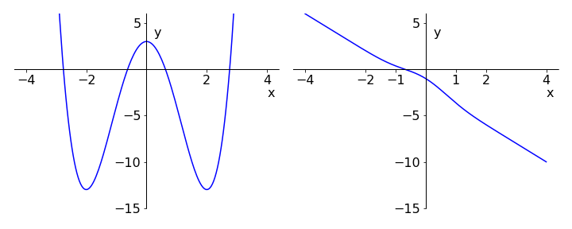
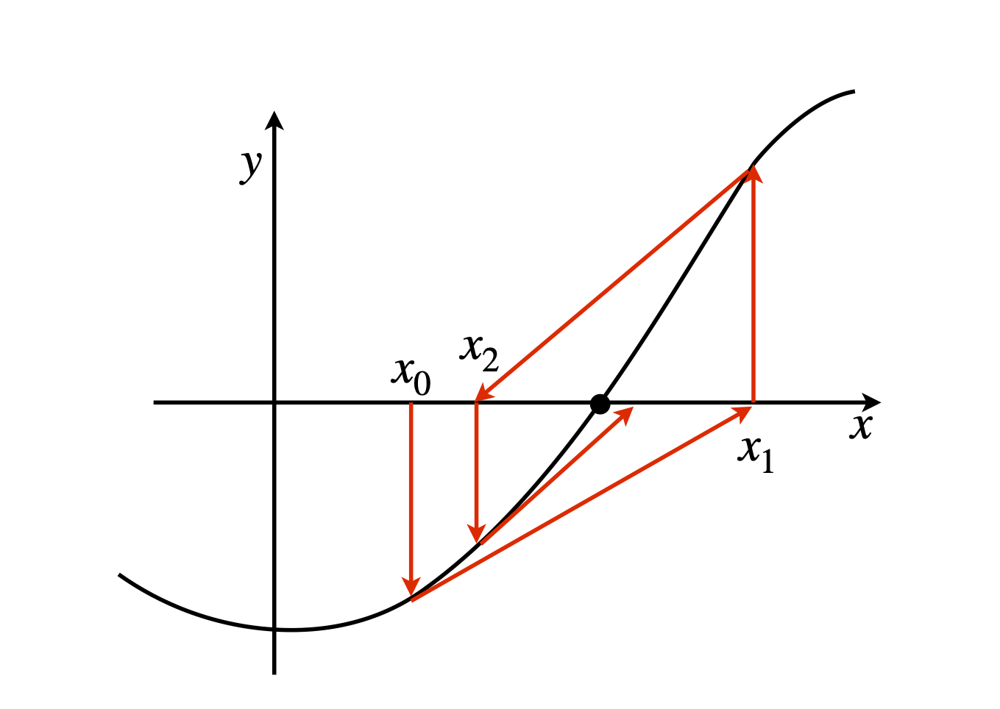
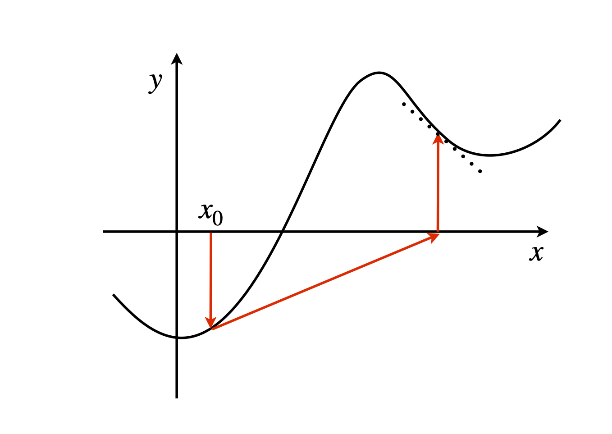

Numerically finding the roots of an equation¶
# import all python add-ons etc that will be needed later on
%matplotlib inline
import numpy as np
import matplotlib.pyplot as plt
from sympy import *
init_printing() # allows printing of SymPy results in typeset maths format
plt.rcParams.update({'font.size': 14}) # set font size for plots
9 The Newton - Raphson algorithm:¶
Two numerical methods are now described for solving equations, which means finding their roots, i.e. the values of \(x\) when \(y = 0\). The Newton - Raphson method uses the derivatives of a function to determine ever-closer approximations to the root of an equation; the related secant and Regula-Falsi (false-position) methods can be used on real experimental data whose equation is unknown. These methods work by making successive approximations.
The equation used in Q62 to work out the optimum strength of bones was given terms of a parameter \(k\); the same equation in \(x\) is \(3-8x^2 +x^4 =0\) and this is quite a tough equation to solve because there are four roots to be found algebraically. Plotting the function \(y = 3 - 8x^2 + x^4\) shows approximately where the roots are; Fig. 23 (left). More difficult equations than this occur in many situations. For instance, a theoretical model might produce a transcendental equation that cannot be solved algebraically when \(y = 0\); for example \(y=e^{-x^2}-2x^2 -2\) as shown in the right-hand graph of Fig.23 and it is then essential to resort to a numerical method to find the root or roots.

Figure 23. Left: Graph of the polynomial \(y = 3 - 8x^2 + x^4\) showing roots at approximately \(\pm 0.6\) and \(\pm 2.7\). Right: The single root of the transcendental equation \(-2x + e^{-x^2} - 2 = 0\) is at \(x \approx -0.7\).
9.1 Derivation of the Newton - Raphson algorithm¶
An equation for which a solution is sought is be represented as \(f(x) = 0\) and its value is made equal to zero because this is where the root will be found, i.e. its \(y\) value is zero. In the derivation of differentiation the equation
occurs and this is now rewritten as
where \(\Delta y\) and \(\Delta x\) are small changes in \(y\) and \(x\). Instead of using \(y\) the more general notation is written in terms of a function \(f\) and then find the change in its value at any two points \(x_i\) and \(x_{i+1}\). Doing this the last equation becomes,
because \(\delta y = f (x_{i+1}) - f (x_{i})\), and \(f'(x_i)\) is the derivative \(dy/dx\) at point \(x_i\). The subscripts \(i\) and \(i+1\) are indices indicating successive values of \(x\) at which the function is calculated.
It can be shown that the root, i.e. solution of the equation, is found when the new value of the function is zero, or \(f (x_{i+1}) = 0\). Equation (33) can be rearranged to produce the \(x_{i+1}^{th}\) value as
This is the Newton - Raphson algorithm and only applies where the gradient is not zero. One initial guessed point \(x_1\) is needed to start the calculation and this should be made close to the root if possible, see Fig. 24, otherwise the algorithm may not converge.
(A more appealing derivation is to use a Taylor expansion of our function about a point we will define as \(x_0\) (see chapter 5)
Ignoring the second derivative and making \(x_0 \equiv x_i\) to be our initial point, the Newton - Raphson formula is obtained by solving for \(x\) where, to be consistent with the notation of equation (34), change \(x \to x_{i+1}\).

Figure 24. Schematic of the pathways followed by the Newton - Raphson root-finding algorithm, \(x_0\) is the initial value. The tangent at each point is projected along to the x-axis and the next \(y\) value and tangent obtained. This process is repeated and should converge on the root.
One way of implementing the Newton - Raphson method is illustrated using the equation \(\displaystyle -2x+e^{-x^2} =2 \), which is written as \(f(x)=-2x+e^{-x^2} -2 \) so that its value is zero when the root is found; see Fig.23. The derivative is \(\displaystyle f '(x) = -2 - 2xe^{-x^2}\). The algorithm used is very basic with no check that the answer is converged.
# The Newton - Raphson method
f = lambda x: -2*x+np.exp(-x**2)-2 # define function returns vale when used as f(x)
dfdx = lambda x: -2-2*x*np.exp(-x**2) # define derivative
x = 1.0 # initial guess
for i in range(6): # guess number of interations needed
x = x - f(x)/dfdx(x) # calculate new value of x (the root) from previous values
print(i,x)
0 -0.3276464465750122
1 -0.643995262286239
2 -0.6887987802741857
3 -0.6889487337548043
4 -0.6889487343788514
5 -0.6889487343788514
9.2 Where the Newton - Raphson method fails¶
The Newton - Raphson method will fail when the derivative is zero, but more often it can fail when the next iteration occurs at a point having a gradient that has the opposite sign to that of any previous points. This occurs after a maximum or minimum in the curve is exceeded. Figure 25 explains this more simply. The gradient at point \(x_1\), moves the next point crossing the x-axis away from the root sought, which means that it is usually sensible to plot the function first, and then decide where to put the initial point. For the function shown in the sketch starting closer to the root will keep the iterations between the maximum and minimum in the curve.

Figure 25. A case where the Newton - Raphson method fails; the gradient at \(x_0\) and \(x_1\) have opposite signs.
9.3 The Secant Method¶
The secant method is effectively a discrete version of the Newton - Raphson method where the gradient is calculated with small but finite differences and is useful when dealing with experimental data. The changes are \(\displaystyle f'(x)\to \frac{\Delta f(x)}{\Delta x} =\frac{f(x_i)-f(x_{i+1})}{x_i-x_{i+1}}\). The algorithm is
This algorithm can be used on real data, i.e. lists of numbers either to find where they accurately cross 0 or by addition or subtraction of a constant to find any other value. The secant and also the bisection methods are described further in Chapter 11, which deals with numerical methods.
To use any of these iterative methods, one or more initial guess for \(x\) has to be made and then the calculation repeated until successive determinations of the function are sufficiently close to 0. You will have to decide how small a difference in \(x\) values is acceptable to stop the calculation and this will vary from case to case. If you want an error of no more than some value \(\epsilon\), then stop the calculation when consecutive results differ by \(\lt\epsilon /2\).